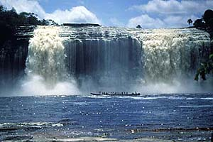

ЛАБОРАТОРНА РОБОТА №6 · ГРЕБЕНЮК ІВАН · 305-ТН
Водоспад із гіперпосиланням
Натисніть на фото, щоб відкрити сторінку «Водоспад».

ЛАБОРАТОРНА РОБОТА №6 · ГРЕБЕНЮК ІВАН · 305-ТН
Натисніть на фото, щоб відкрити сторінку «Водоспад».
